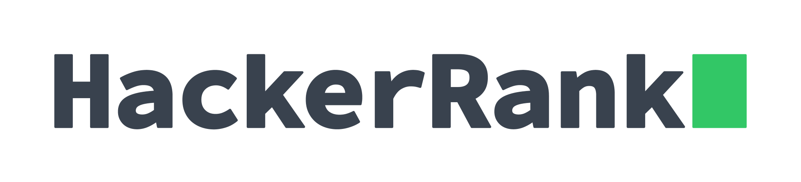
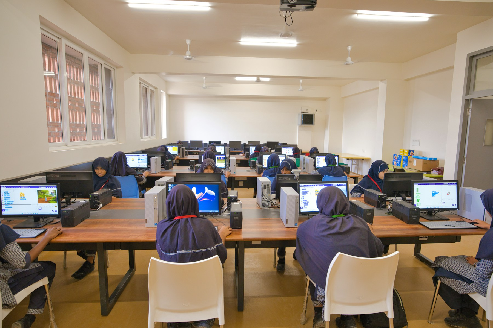
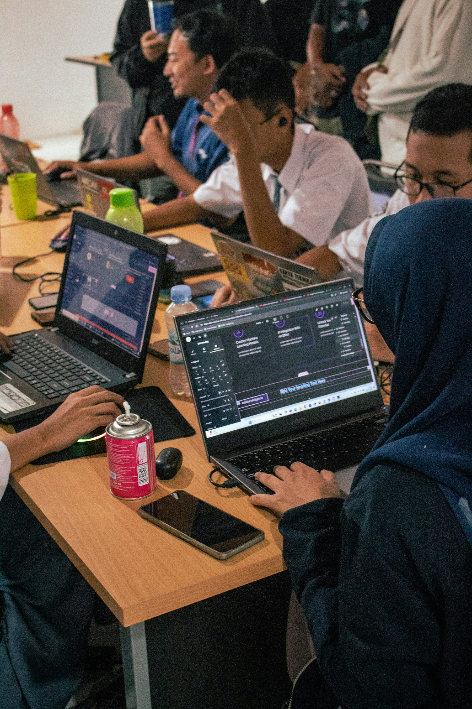

A campus full of talent. One shared view.
See the work.
Find your next level.
Projects, coding practice and semester progress—together, so students can grow and faculty can guide.
student progress




One laptop
at a time.
Checking every student’s GitHub repos and HackerRank progress took hours. Monitoring each semester exam meant repeating the same manual rounds.

Only your
friend group?
Hard to know how your batch was really doing—or who else shared your goals for great projects and good placements.

Meet the people
who share your goal.
Compare with batchmates and students across campus chasing the same goals: ambitious projects and strong placements. See the level around you through GitHub, HackerRank and semester progress—then turn that energy into your next move.
Semester viewWhat changes on campus
One shared view · two perspectivesReplace the laptop-by-laptop tour with a view across GitHub repos and HackerRank progress. Compare semester-by-semester signals, prepare a clearer exam review, and focus check-ins where support will help most.
Look beyond your friends. Compare with batchmates and peers across campus who share your goals for stronger projects and placements. Discover what the cohort is building, then choose a clear next step.
signals
progress
goal
More room to grow.Faculty can follow cohort progress. Students can compare, collaborate and aim for stronger projects and placements.